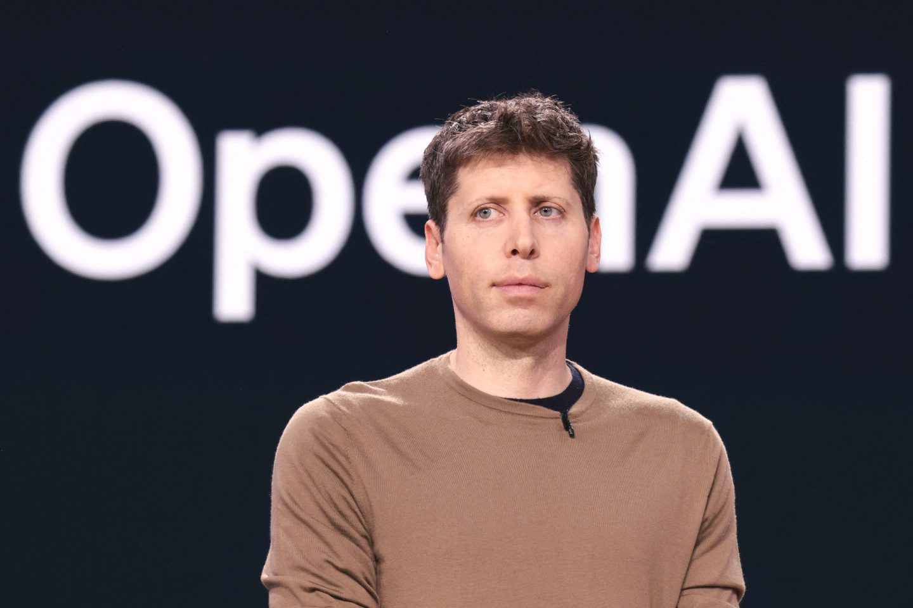

CSS ANIMATION2
SAM ALTMAN

EMPRESARIO TECNOLOGICO Y VISIONARIO DE LA IA
Sam Altman es un empresario e inversor tecnológico estadounidense, conocido principalmente por ser el director ejecutivo de OpenAI.
Nació el 22 de abril de 1985 en Chicago. Desde joven mostró interés por la tecnología y la programación. Estudió informática en la Universidad de Stanford, aunque no terminó la carrera para dedicarse a emprender.
En 2005 cofundó Loopt, una aplicación de geolocalización. Más adelante, en 2014, fue nombrado presidente de Y Combinator, una de las aceleradoras de startups más importantes del mundo, donde ayudó a impulsar empresas como Airbnb y Dropbox.
En 2015, Altman cofundó OpenAI con el objetivo de desarrollar inteligencia artificial avanzada de manera segura y beneficiosa para la humanidad. Desde entonces, se ha convertido en una de las figuras más influyentes en el campo de la IA.

Sam Altman ha destacado por su visión sobre el impacto de la inteligencia artificial en la sociedad, promoviendo un desarrollo responsable y ético de esta tecnología. Bajo su liderazgo en OpenAI, se han creado herramientas avanzadas que
buscan mejorar la vida de las personas, la educación y la productividad. Además, es reconocido por apoyar a nuevos emprendedores y por su influencia en el crecimiento de startups tecnológicas a nivel mundial.
VOLVER